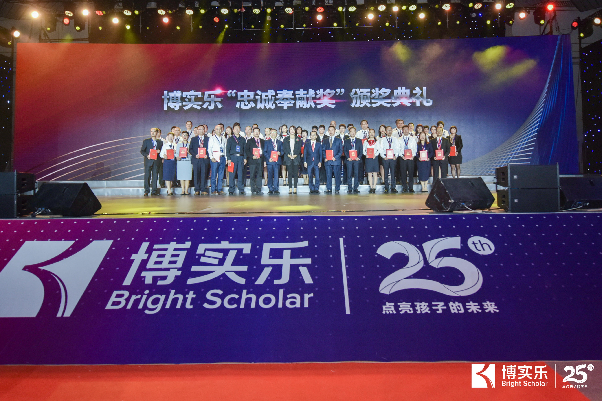
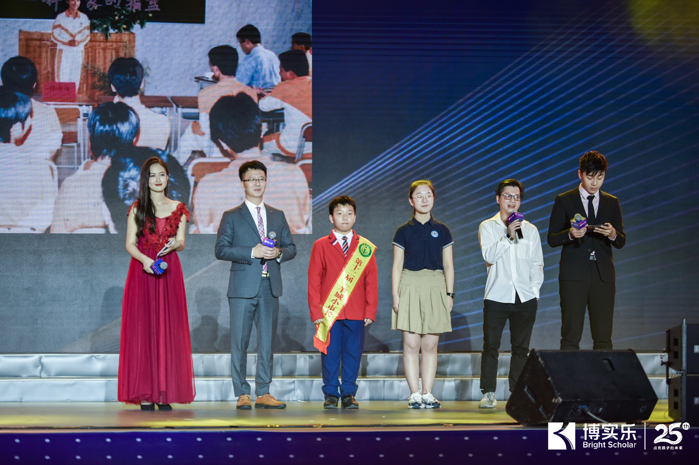
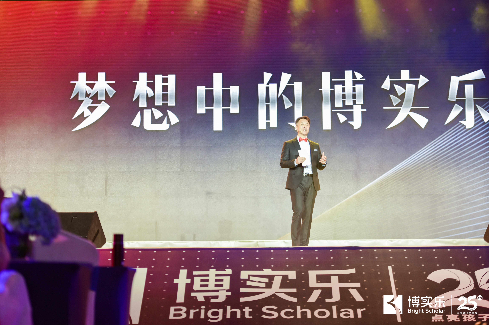
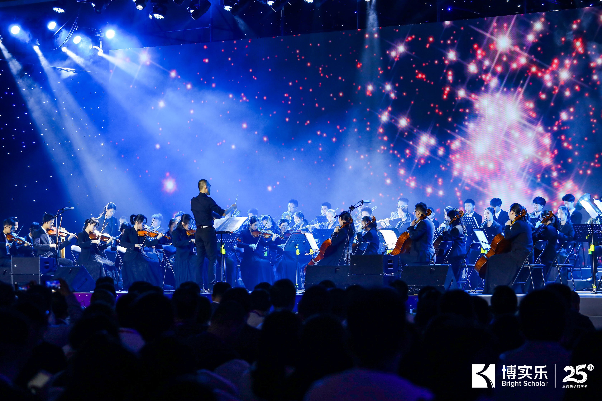
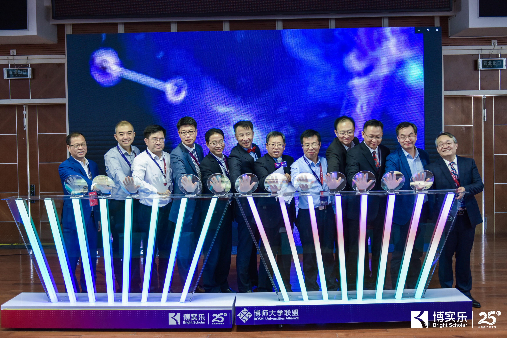

Bright Scholar Education Group Won the "Golden Bauhinia" Award of China's Securities "The Most Brand...
On December 5, the highly anticipated 9th China's Securities “GoldenBauhinia” Award...
Details>>2019.12.24
On November 16, 2019, “The World Starts Here”, Bright Scholar’s 25th Anniversary Ceremony and International Education Summit were held in
Guangdong Country Garden School. From its beginning 25 years ago with the Guangdong Country Garden School, Bright Scholar has gone global.
“The World Starts Here” Bright Scholar's 25th Anniversary Starting Ceremony
At the celebration site, Bright Scholar’s CEO Feng Yiyi thought about "The Dream of Bright Scholar": Based on the global education network,
Bright Scholar will continue to uphold 25 years of personalized education and to provide an immersive international learning environment for students.
Founder's Message: Cultivating the Students to become pillars for the Benefit of Society.
In 1994, Mr. Yang Guo Qiang, founder of the Country Garden School and chairman of the Country Garden Group, sowed the seeds of education opening
up a new school, and now those seeds have grown into tall trees.
As of November 2019, Bright Scholar has 80 schools and 19 Elan schools in 10 provinces, 8 overseas K12 schools and 10 overseas language schools
in the United States, the United Kingdom and Canada. Bright Scholar has laid out study abroad counseling, study camps, pre-service services, and built
an ecological circle of educational services.
In 2019, 93% of our graduating students entered 50 of the top universities in the World. In 2018, three schools of Bright Scholar was awarded into Hurun Education Top International Schools in China 2018, and Guangdong Country Garden School was ranked in top 10.
At the celebration site, Mr. Yang Guoqiang reviewed the history of the schools creation. In his mind, Bright Scholar education has always occupied a special space. In his view, teaching and educating people are as glorious as the sun, and good education nourishes the growth of all things, the most gratifying thing is that children are more successful than their parents.

Message from Yang Guoqiang, Chairman of the Board of Directors of Country Garden Group
Yang said, "We stress ourselves raising children for more than just sending them top restigious world schools."
Yang also stressed that education should focus not only on the present, but also on the future. He said that with the advent of the Industrial 4.0 era, the artificial intelligence society is getting closer and closer, and education should keep up with the pace. He himself on his own will join the robot
industry. He encouraged Bright Scholar to connect with the world's leading technologies in order to nurture talented students to join the future era of
artificial intelligence.
25 years ago pioneers from the Guangdong Country Garden School in Shunde ploughed ahead to open the doors and give wings to countless students to
fly into the world.
From Guangdong to the world, Bright Scholar has taken the lead in the era of Chinese private education and left their mark. At the ceremony, Ms. Yang Huixuan, Co-Chairman of the Board of Directors of the Country Garden Group and Chairman of the Bright Scholar Education Group, and He Junli,
Executive Vice Chairman of the Board of Directors of Bright Scholar Education Group, presented the "Loyalty Award" to more than 50 veterans who joined
the company in 1994.

At the 25 year celebration, alumni of Country Garden School, sent videos sharing their blessings and congratulations. Students shared their positive experiences of attending the school, and expressed their gratitude towards the school.

Bright Scholar's CEO Feng's Speech: Bright Scholar in My Dream
"My name is Bixiaole. In September 2021, at the age of 12, I went to GuangdongCountry Garden School. Like all children, from birth, my parents have
high hopes, but my low scores let my parents regret ..."
At the celebration site, Bright Scholar's CEO FengYiyi wrote a letter 25 years later reminding of us of a child named "Bixiaole." He described the daily
study of Bixiaole in Bright Scholar and how he found a hobby, joined the robot creator experiment class, practiced rockclimbing, baseball, tennis, golf,
and more. He was in various competitions, developed collaborative skills, in the classroom, used VR teaching equipment, participated in simulation
experimental equipment learning, Explored cutting-edge knowledge, technology and art with the world's leading scientists and artists. Even more
impressive is in the Bright Scholar Global School Project, "Bixiaole" could choose to study in China, the United Kingdom and the Unites States. His
education here transformed him.
In fact, the learning scene of the future Bright Scholar students, described by Feng Yiyi, is gradually becoming a reality. In the near future, relying on the
global network of schools in educational technology and Bright Scholar, Bright Scholar will build a global school: integrate global educational resources,
build a global classroom, provide an immersive international learning environment, and allow teachers and students to learnand teach across
geographies, opening the door to the world for them.

During the celebration site, teachers and students from Bright Scholar Guangdong CountryGarden School, Taishan Country Garden School, Country
Garden Experimental School, Phoenix City International School performed symphony music, national standard dance, modern dance, hip-hop and choral program. They had a wonderful performance, showing the youth and vitality of Bright Scholar' students.

Boshi University Alliance Brand Launch and International Education Development University Summit
In the afternoon, Boshi University Alliance Brand Launch and International Education Development University Summit, International School
Future Development Summit, and the Greater Bay Area Preschool Education Summit were held.

The Boshi University Alliance is a basic education cooperation platform established by Bright Scholar and jointly established by Universities. Cheng
Jinsheng, Vice President of Bright Scholar University Alliance and VicePresident of Bright Scholar Education Group, said the alliance aims to promote exchanges and cooperation among the various alliance units in teaching, scientific research, training, forums, employment, internships and so on, and
promote the transformation and sustainable development of basic education in China.
The three summits attracted university leaders, professors from Beijing Normal University, Shaanxi Normal University, Jinan University, Guangdong
University of Foreign Languages and Foreign Trade, Changchun Normal University, Guizhou University, South China Normal University, Central China
Normal University, Northeast Normal University, as well as principals of BCS (Bournemouth School), Fettes College, CATS Colleges principal and other
well-known schools at home and abroad, Hurun and other well-known entrepreneurs, industry benchmark figures attended. The guests on stem education
exploration, bilingual teacher training, international exchanges, pre-school education and in-depth teaching in the Greater Bay Area and other hot topics,
triggered the thinking of teaching and learning, set off the "international education spring breeze".
Among them, in the International School Future Development Summit, Hurun,Chairman and Chief Researcher, gave a speech on the titled "How to
Evaluate a Good International School?", commenting on the current situation of China's international schools and looking forward to the development
trend.
The Great Bay Area Preschool Education Development Summit invited family education experts, China's Top 100 Kindergarten Principal, and expert
from universities such as the University of Sydney and Harvard University to read in-depth topics, such as early childhood curriculum gamification,
learner communities, children's social emotional learning, listening and art education. Leading practitioners and parents in the preschool education
industry discussed how to train young children in a new era.
Bright Scholar's 25th anniversary ceremony has come to an end, but the pace of education will not stop. 25 years is a milestone in the development of
Bright Scholar, but also a new starting point full of pride. Today, we start from here, in order to build a global high-quality education group and make
unremitting efforts to work together towards the next 25 yearsof Bright Scholar!
makeinnovationindustrial
 Share：
Share：
On December 5, the highly anticipated 9th China's Securities “GoldenBauhinia” Award...
Details>>On November 27, 2019, the “Back to China” Annual Education Gala of Tencent Education was held in...
Details>>On November 16, 2019, “The World Starts Here”, Bright Scholar’s 25th Anniversary Ceremony and...
Details>>